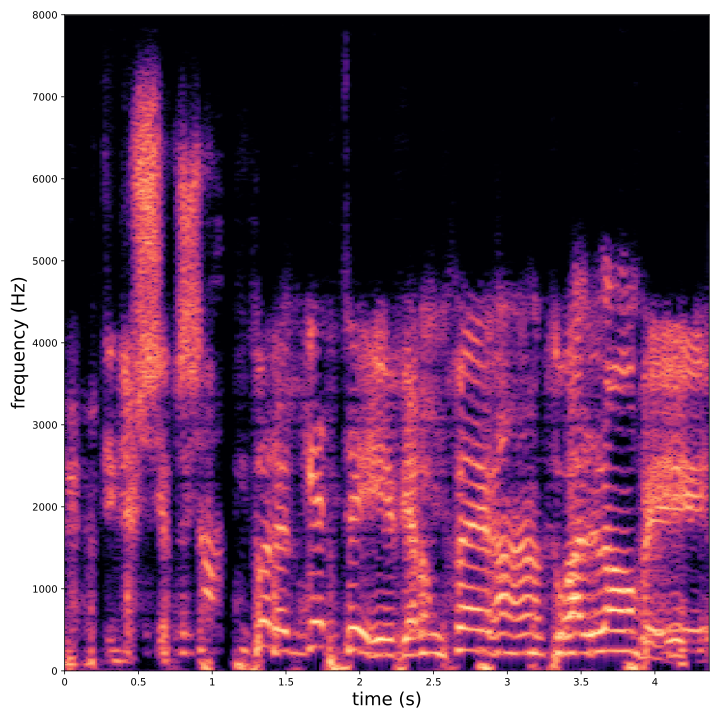
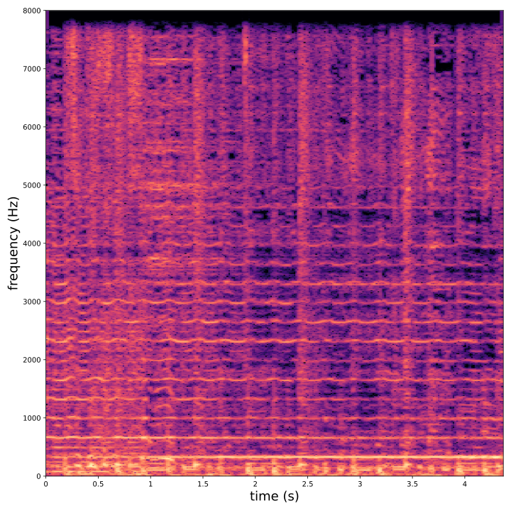
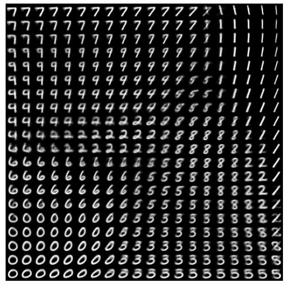

class: center, middle <br/> # Bayesian Methods for Machine Learning .small-vspace[ ] ### Lecture 7 - Deep generative models <br/><br/> .bold[Simon Leglaive] <br/> <br/> <br/><br/> .tiny[CentraleSupélec] --- class: center, middle count: false # Introduction --- ## Artificial neuron .left-column[ $$\hat{y} = f(\mathbf{x}; \theta) = \sigma\left(\mathbf{w}^T \mathbf{x} + b \right) = \sigma\left(\sum\_i w\_i x\_i + b\right),$$ where - $\mathbf{x}$ is the input vector; - $\hat{y}$ the scalar output; - $\mathbf{w}$ is the weight vector; - $b$ is the scalar bias; - $\sigma$ is a non-linear activation function; - $\theta = \\{\mathbf{w}, b \\}$ are the neuron's parameters. ] .right-column[ .right.width-60.center[  ] ] .reset-column[] --- ## Layer Neurons can be composed in parallel to form a .bold[layer] with multiple outputs: .left-column[ $$\hat{\mathbf{y}} = f(\mathbf{x}; \theta) = \sigma\left(\mathbf{W}^T \mathbf{x} + \mathbf{b} \right),$$ where we have now - an **element-wise** activation function, - an **output vector** $\hat{\mathbf{y}}$, - a **weight matrix** $\mathbf{W}$, - a **bias vector** $\mathbf{b}$, - such that $\theta = \\{\mathbf{W}, \mathbf{b} \\}$. ] .right-column[ .right.width-60.center[  ] ] --- ## Multi-layer Perceptron Similarly, layers can be composed in **series**, to form a **multi-layer Perceptron**, or **feed-forward fully-connected** neural network. .width-50.center[  ] The model parameters are the weight matrices and bias vectors of all layers. --- ## Supervised learning - **Training dataset** (step 0): $\mathcal{D} = \\{\mathbf{x}\_i, \mathbf{y}\_i\\}_{i=1}^N$ where the $\mathbf{x}_i$'s are the inputs, and $\mathbf{y}_i$'s the labels. - **Model** (step 1): A neural network $f(\cdot; \theta)$. - **Loss function** (step 2): $$\mathcal{L}(\theta) = \frac{1}{N} \sum\_{(\mathbf{x}\_i, \mathbf{y}\_i) \in \mathcal{D}} \ell\Big(\mathbf{y}\_i, f(\mathbf{x}\_i; \theta)\Big),$$ where $\ell(\cdot, \cdot)$ is task-dependent. - **Training** (step 3): Minimize $\mathcal{L}(\theta)$ with (variants of) gradient descent and backpropagation. - **Evaluation** (step 4): Test the performance on examples that were not seen during training. --- class: middle A great number of successful practical applications of machine and deep learning rely on **supervised learning** methods. .grid[ .kol-2-3[ <div style="text-align:center;margin-bottom:30px"> <iframe width="650" height="350" src="https://www.youtube.com/embed/qWl9idsCuLQ?start=10&autoplay=1&mute=1" frameborder="0" allow="autoplay; encrypted-media" style="max-width:100%" allowfullscreen=""></iframe> </div> .caption[ .tiny[Zhao et al., "[ICNet for Real-Time Semantic Segmentation on High-Resolution Images](https://arxiv.org/pdf/1704.08545.pdf)", ECCV 2018 ]] ] .kol-1-3[ .tiny[ The Cityscapes dataset for semantic segmentation of urban images contains **5k images** with high quality pixel-level annotations. "Annotation and quality control required more than **1.5 h on average for a single image**" (Cordts et al., 2016). More than 300 days of annotation! ] ] ] .credit[M. Cordts et al., ["The Cityscapes Dataset for Semantic Urban Scene Understanding"](https://www.cityscapes-dataset.com/wordpress/wp-content/papercite-data/pdf/cordts2016cityscapes.pdf), IEEE CVPR, 2016] --- ## Unsupervised learning We need **unsupervised** methods that can learn to unveil the **underlying (hidden) structure** of the data without requiring ground-truth labels. **Semi-supervised methods** are also of great interest. .center.width-70[] .tiny.caption[ Component-by-component scene generation with GENESIS, a generative model of 3D scenes capable of both decomposing and generating scenes by capturing relationships between scene components] .credit[Image credits: Engelcke et al., "[GENESIS: Generative Scene Inference and Sampling with Object-Centric Latent Representations](https://arxiv.org/pdf/1907.13052.pdf)", ICLR 2020.] ??? - GENESIS pursues a consistent strategy for scene generation: Step one generates the floor and the sky, defining the layout of the scene. Steps two to four generate individual foreground objects. Some of these slots remain empty if less than three objects are present in the scene. The final three steps generate the walls in the background. - Unsupervised models can also be used for **semi-supervised learning**, where the goal is to exploit both a **small-scale labeled** dataset and a **large-scale unlabeled** dataset. The unlabeled data are used to learn a representation that makes the supervised task simpler. The resulting semi-supervised model performs typically better than a supervised model trained on the small labeled dataset. --- ## Generative modeling .small-vspace.center.width-50[] The goal is to tune the parameters $\theta$ of the model distribution $p(\mathbf{x} ; \theta)$ so that it is as close as possible to the true data distribution $p^\star(\mathbf{x})$, according to some measure of fit. For instance, minimizing the Kullback-Leibler (KL) divergence $D\_{\text{KL}} (p^\star(\mathbf{x}) \parallel p(\mathbf{x}; \theta))$ is equivalent to maximum likelihood estimation. --- ## 1-dimensional toy example - We define the true data distribution $p^\star(x)$ as a Gaussian distribution with known mean and variance, but of course usually we do not know this distribution. - We assume a Gaussian model distribution $p(x ; \theta) = \mathcal{N}(x; \mu, \sigma^2) $ where $\theta = \\{ \mu, \sigma^2 \\}$. - The parameters $\theta$ are estimated by minimizing .small[(a Monte Carlo estimate of)] $D\_{\text{KL}}\left( p^\star(x) \parallel p(x; \theta) \right)$, i.e. by maximum likelihood. .center.width-50[] --- ## $10^6$-dimensional example .vspace[ ] <div style="text-align:center;margin-bottom:30px"> <iframe width="700" height="400" src="https://www.youtube.com/embed/6E1_dgYlifc?autoplay=1&mute=1" frameborder="0" allow="autoplay; encrypted-media" style="max-width:100%" allowfullscreen=""></iframe> </div> .credit[T. Karras et al., [Analyzing and Improving the Image Quality of StyleGAN](https://arxiv.org/abs/1912.04958), CVPR 2020.] --- ## Deep generative models (DGM) - The model distribution $p(\mathbf{x} ; \theta)$ is somehow defined by means of a neural network. - Two seminal models: Variational autoencoders (VAEs) .tiny[(Kingma and Welling, 2014; Rezende et al., 2014)] and generative adversarial networks (GANs) .tiny[(Goodfellow et al., 2014)]. - DGM contain **hundreds of thoughsands of parameters**, trained in a scalable way using **large datasets of unlabeled high-dimensional data**. .center.width-60[] .credit[ I. Goodfellow et al., "[Generative Adversarial Networks](https://arxiv.org/abs/1406.2661)", NeurIPS 2014. D.P. Kingma and M. Welling, "[Auto-Encoding Variational Bayes](https://arxiv.org/pdf/1312.6114.pdf)", ICLR 2014. D.J. Rezende et. al, "[ Stochastic backpropagation and approximate inference in deep generative models](https://arxiv.org/pdf/1401.4082.pdf)", ICML 2014. ] --- ## Several flavors of DGMs **Autoregressive DGMs** define the model distribution recursively, using the chain rule: $$ p(\mathbf{x} ; \theta) = p(x\_1) \prod\_{i=2}^D p(x\_i \mid x\_{1:i-1}; \theta). $$ .vspace.center.width-50[] .credit[ A. van den Oord et al., [WaveNet: A generative model for raw audio](https://arxiv.org/pdf/1609.03499.pdf), arxiv preprint, 2016. Image credits: https://deepmind.com/blog/article/wavenet-generative-model-raw-audio ] --- **Flow-based DGMs** transform a simple distribution into a complex one by applying a sequence of invertible mappings: $$ \mathbf{x} = f\_K \circ ... \circ f\_1(\mathbf{z}\_0), \qquad \mathbf{z}\_0 \sim p_0(\mathbf{z}\_0). $$ .center.width-70[] As mappings are invertible, we can express $ p(\mathbf{x} ; \theta)$ analytically from the initial density $p_0(\mathbf{z}\_0)$ and the Jacobian of the inverse transforms. .credit[Image credits: D. Rezende et al., [Variational Inference with Normalizing Flows](https://arxiv.org/pdf/1505.05770.pdf), ICML 2015.] --- **Latent-variable-based DGMs** define the model distribution as a marginal distribution, by introducing a low-dimensional latent random vector: $$ p(\mathbf{x} ; \theta) = \int p(\mathbf{x}, \mathbf{z} ; \theta) d\mathbf{z} = \int p(\mathbf{x} | \mathbf{z} ; \theta) p(\mathbf{z}) d\mathbf{z}. $$ .center.width-50[] GANs and VAEs are two examples of latent-variable-based DGM, but $p(\mathbf{x} | \mathbf{z} ; \theta)$ is only defined explicitely (i.e. analytically) for VAEs. Today we will focus on VAEs. --- class: middle ## VAE for face generation .center.width-70[] .credit[A. Vahdat and J. Kautz [NVAE: A Deep Hierarchical Variational Autoencoder](https://arxiv.org/pdf/2007.03898.pdf), 2020.] --- ## VAE for modifying faces by tuning latent factors .center.vspace.width-80[] .caption[Modifying two latent factors: smiling and mouth open] .credit[T. White, [Sampling Generative Networks](https://arxiv.org/pdf/1609.04468.pdf), 2016] --- ## VAE for sentence generation from a continuous space .center.vspace.width-50[] .caption[Interpolation in a recurrent VAE latent space] .credit[S.R. Bowman et al., [Generating Sentences from a Continuous Space](https://arxiv.org/pdf/1511.06349.pdf), 2015] --- ## VAE for automatic design of new molecules .center.vspace.width-70[] .credit[R. Gómez-Bombarelli et al., [Automatic Chemical Design Using a Data-Driven Continuous Representation of Molecules](https://pubs.acs.org/doi/full/10.1021/acscentsci.7b00572), 2018] --- ## VAE for symbolic music generation .center.vspace[ <iframe width="640" height="400" src="https://www.youtube.com/embed/G5JT16flZwM" frameborder="0" volume="0" allowfullscreen></iframe> ] .caption[Gradual blending of 2 different melodies.] .credit[A. Roberts et al., [A Hierarchical Latent Vector Model for Learning Long-Term Structure in Music](https://arxiv.org/pdf/1803.05428.pdf), 2018] --- ## VAE for singing voice separation in music .grid[ .kol-1-3[ <img src="audio/demo_music_sep/mix_spectro.svg", width=100%> <audio controls src="audio/demo_music_sep/mix.wav"></audio> ] .kol-1-3[  <audio controls src="audio/demo_music_sep/BRNN_VEM/vocals.wav"></audio> ] .kol-1-3[  <audio controls src="audio/demo_music_sep/BRNN_VEM/accomp.wav"></audio> ] ] .credit[S. L., X. Alameda-Pineda, L. Girin, R. Horaud, [A Recurrent Variational Autoencoder for Speech Enhancement](https://arxiv.org/pdf/1910.10942.pdf), IEEE ICASSP, 2020.] --- ## VAE for audio synthesis - Unconditional generation <table> <thead> <tr> <th style="text-align: center">Dataset</th> <th>Generation</th> </tr> </thead> <tbody> <tr> <td style="text-align: center">Darbouka (stereo)</td> <td><audio src="https://anonymous84654.github.io/ICLR_anonymous/audio/docs_darbouka_prior.mp3" controls=""></audio></td> </tr> <tr> <td style="text-align: center">VCTK (mono)</td> <td><audio src="https://anonymous84654.github.io/ICLR_anonymous/audio/hierarchical.mp3" controls=""></audio></td> </tr> </tbody> </table> .grid[ .kol-1-2[ - Strings to speech transfer <table> <thead> <tr> <th>original</th> <th>reconstructed</th> </tr> </thead> <tbody> <tr> <td><audio src="https://anonymous84654.github.io/ICLR_anonymous/eval_timbre_2/x.mp3" controls="" style="width: 200px"></audio></td> <td><audio src="https://anonymous84654.github.io/ICLR_anonymous/eval_timbre_2/y.mp3" controls="" style="width: 200px"></audio></td> </tr> </tbody> </table> ] .kol-1-2[ - Speech to strings transfer <table> <thead> <tr> <th>original</th> <th>reconstructed</th> </tr> </thead> <tbody> <tr> <td><audio src="https://anonymous84654.github.io/ICLR_anonymous/eval_timbre_1/x.mp3" controls="" style="width: 200px"></audio></td> <td><audio src="https://anonymous84654.github.io/ICLR_anonymous/eval_timbre_1/y.mp3" controls="" style="width: 200px"></audio></td> </tr> </tbody> </table> ] ] .credit[A. Caillon, P. Esling, [RAVE: A variational autoencoder for fast and high-quality neural audio synthesis](https://arxiv.org/abs/2111.05011), arXiv, 2021.] --- class: middle .center[ # Variational autoencoders ] .credit[ D.P. Kingma and M. Welling, [Auto-Encoding Variational Bayes](https://arxiv.org/pdf/1312.6114.pdf), ICLR 2014. D.J. Rezende et. al, [ Stochastic backpropagation and approximate inference in deep generative models](https://arxiv.org/pdf/1401.4082.pdf), ICML 2014. ] --- ## Generative model Let $\mathbf{x} \in \mathbb{R}^D$ and $\mathbf{z} \in \mathbb{R}^K$ be two random vectors (typically $K \ll D$). The generative model is defined by: $$ p(\mathbf{x} ; \theta) = \int p(\mathbf{x} | \mathbf{z} ; \theta) p(\mathbf{z}) d\mathbf{z}.$$ .grid[ .kol-2-3[ - The **prior** is a standard Gaussian distribution: $$ p(\mathbf{z}) = \mathcal{N}(\mathbf{z}; \mathbf{0}, \mathbf{I}).$$ - The **likelihood** is parametrized with a **generative/decoder neural network**, e.g. $$ p(\mathbf{x} | \mathbf{z} ; \theta ) = \mathcal{N}\left( \mathbf{x}; \boldsymbol{\mu}\_\theta(\mathbf{z}), \text{diag}\left\\{ \mathbf{v}\_\theta(\mathbf{z}) \right\\} \right), $$ where $\theta$ denotes the parameters of the decoder network. ] .kol-1-3[ .right.width-80[] ] ] --- class: middle, center ## Pause on the notebook --- class: middle, center ## How to estimate the VAE generative model parameters? --- ## KL divergence minimization - We have defined our model distribution $\displaystyle p(\mathbf{x}; \theta) = \int p(\mathbf{x}, \mathbf{z}; \theta) d\mathbf{z} = \int p(\mathbf{x} | \mathbf{z}; \theta) p(\mathbf{z}) d\mathbf{z} $. -- count: false - We want to estimate the model parameters $\theta$ so that $p(\mathbf{x}; \theta)$ is as close as possible to the true unknown data distribution $p^\star(\mathbf{x})$. -- count: false - We take the Kullback-Leibler (KL) divergence as a measure of fit: $$D\_{\text{KL}}(p \parallel q) = \mathbb{E}\_{p}[ \ln(p) - \ln(q)] \ge 0.$$ -- count: false - We want to solve: $$ \begin{aligned} & \underset{\theta}{\min}\hspace{.1cm} D\_{\text{KL}} (p^\star(\mathbf{x}) \parallel p(\mathbf{x}; \theta)) \\\\ \Leftrightarrow \hspace{.2cm} & \underset{\theta}{\min}\hspace{.1cm} \mathbb{E}\_{p^\star(\mathbf{x})}[ \ln p^\star(\mathbf{x}) - \ln p(\mathbf{x}; \theta)] \\\\ \Leftrightarrow \hspace{.2cm} & \underset{\theta}{\max}\hspace{.1cm} \mathbb{E}\_{p^\star(\mathbf{x})}[ \ln p(\mathbf{x}; \theta)] \end{aligned} $$ -- count: false Equivalent to **maximum marginal likelihood** estimation. --- ## Empirical risk minimization - We do not have acces to the true data distribution $p^\star(\mathbf{x})$... -- count: false - ... but we have access to a dataset $\mathcal{D} = \\{\mathbf{x}\_i \in \mathbb{R}\\}\_{i=1}^N$ of independent and identically distributed (i.i.d) samples drawn from $p^\star(\mathbf{x})$: $$ \mathbf{x}\_n \overset{i.i.d}{\sim} p^\star(\mathbf{x}), \qquad \forall n \in \{1,...,N\}.$$ -- count: false - **Monte Carlo estimate**: The expectation is approximated by an empirical average, using i.i.d samples drawn from the true intractable distribution, $$ \mathbb{E}\_{p^\star(\mathbf{x})} [ f(\mathbf{x}; \theta) ] \approx \frac{1}{N} \sum\_{i=1}^N [f(\mathbf{x}_n; \theta)].$$ The approximation error decreases as $N$ increases (law of large numbers). -- count: false - This is a general principled called **empirical risk minimization** in statistical learning theory. --- ## Maximum likelihood estimation - To sum up, we want to minimize the KL divergence between $p^\star(\mathbf{x})$ and $p(\mathbf{x}; \theta)$ w.r.t $\theta$ (the weights and biases of the generative network), which is equivalent to solving: $$ \underset{\theta}{\max} \left\\{ \mathbb{E}\_{p^\star(\mathbf{x})}[ \ln p(\mathbf{x}; \theta)] \approx \frac{1}{N} \sum\_{i=1}^N \ln p(\mathbf{x}\_n; \theta) \right\\}.$$ -- count: false - Let's try to develop the expression of the marginal likelihood: $$ p(\mathbf{x}; \theta) = \int p(\mathbf{x}, \mathbf{z}; \theta) d\mathbf{z} = \int p(\mathbf{x} | \mathbf{z}; \theta) p(\mathbf{z}) d\mathbf{z} = \int \mathcal{N}\left(\mathbf{x}; \boldsymbol{\mu}\_\theta(\mathbf{z}), \text{diag}\left\\{ \mathbf{v}\_\theta(\mathbf{z}) \right\\} \right) \mathcal{N}(\mathbf{z}; \mathbf{0}, \mathbf{I}) d\mathbf{z}.$$ -- count: false - We cannot compute this integral analytically, because the integrand is highly non-linear in $\mathbf{z}$. -- count: false - We will resort to **variational inference** techniques, that we have already encountered in this course. --- ## Variational inference - For any distribution $q(\mathbf{z} | \mathbf{x}; \phi)$, we have .tiny[(Neal and Hinton, 1999; Jordan et al. 1999)] $$ \ln p(\mathbf{x}; \theta) = \mathcal{L}(\mathbf{x}; \phi, \theta) + D\_{\text{KL}}(q(\mathbf{z} | \mathbf{x}; \phi) \parallel p(\mathbf{z} | \mathbf{x}; \theta)),$$ where $\mathcal{L}(\mathbf{x}; \phi, \theta)$ is the **evidence lower bound** (ELBO), defined by $$ \mathcal{L}(\mathbf{x}; \phi, \theta) = \mathbb{E}\_{q(\mathbf{z} | \mathbf{x}; \phi)} [\ln p(\mathbf{x}, \mathbf{z}; \theta) - \ln q(\mathbf{z} | \mathbf{x}; \phi)]. $$ .credit[ R.M. Neal and G.E. Hinton, ["A view of the EM algorithm that justifies incremental, sparse, and other variants"](http://www.cs.toronto.edu/~radford/ftp/emk.pdf), in M. I. Jordan (Ed.), .italic[Learning in graphical models], Cambridge, MA: MIT Press, 1999. M.I. Jordan et al., ["An introduction to variational methods for graphical models"](https://people.eecs.berkeley.edu/~jordan/papers/variational-intro.pdf), Machine learning, 1999.] -- count: false .left-column.center[ <hr style="border:1px solid black" width="70%"> </hr> .bold[Problem #1] $$ \underset{\theta}{\max}\, \mathcal{L}(\mathbf{x}; \phi, \theta),$$ where $\mathcal{L}(\mathbf{x}; \phi, \theta) \le \ln p(\mathbf{x}; \theta)$ ] -- count: false .right-column.center[ <hr style="border:1px solid black" width="70%"> </hr> .bold[Problem #2] $$ \underset{\phi}{\max}\, \mathcal{L}(\mathbf{x}; \phi, \theta) $$ $$ \Leftrightarrow \underset{\phi}{\min}\, D\_{\text{KL}}(q(\mathbf{z} | \mathbf{x}; \phi) \parallel p(\mathbf{z} | \mathbf{x}; \theta))$$ ] .reset-column[ ] --- class: center, middle To fully define the objective function, we need to specify the **inference model** $q(\mathbf{z} | \mathbf{x}; \phi)$. --- ## Inference model The **inference model** (approximate posterior) is typically defined by: $$ q(\mathbf{z} | \mathbf{x}; \phi) = \mathcal{N}\left( \mathbf{z}; \boldsymbol{\mu}\_\phi(\mathbf{x}), \text{diag}\left\\{ \mathbf{v}\_\phi(\mathbf{x}) \right\\} \right),$$ where the mean and variance vectors are provided by the **encoder** neural network. .vspace.center.width-30[] --- ## ELBO The ELBO is now fully defined: $$ \begin{aligned} \mathcal{L}(\mathbf{x}; \phi, \theta) &= \mathbb{E}\_{q(\mathbf{z} | \mathbf{x}; \phi)} [\ln p(\mathbf{x}, \mathbf{z}; \theta) - \ln q(\mathbf{z} | \mathbf{x}; \phi)] \\\\ &= \underbrace{\mathbb{E}\_{q(\mathbf{z} | \mathbf{x}; \phi)} [\ln p(\mathbf{x} | \mathbf{z}; \theta)]}\_{\text{reconstruction accuracy}} - \underbrace{D\_{\text{KL}}(q(\mathbf{z} | \mathbf{x}; \phi) \parallel p(\mathbf{z}))}\_{\text{regularization}}. \end{aligned} $$ - prior: $ \hspace{2cm} p(\mathbf{z}) = \mathcal{N}(\mathbf{z}; \mathbf{0}, \mathbf{I})$ - likelihood model: $ \hspace{.45cm} p(\mathbf{x} | \mathbf{z} ; \theta ) = \mathcal{N}\left( \mathbf{x}; \boldsymbol{\mu}\_\theta(\mathbf{z}), \text{diag}\left\\{ \mathbf{v}\_\theta(\mathbf{z}) \right\\} \right)$ - inference model: $ \hspace{.42cm} q(\mathbf{z} | \mathbf{x}; \phi) = \mathcal{N}\left( \mathbf{z}; \boldsymbol{\mu}\_\phi(\mathbf{x}), \text{diag}\left\\{ \mathbf{v}\_\phi(\mathbf{x}) \right\\} \right)$ --- class: middle, center ## Pause on the notebook --- class: middle, center ## Back to the computation of the ELBO --- class: middle $$ \mathcal{L}(\mathbf{x}; \phi, \theta) = \mathbb{E}\_{q(\mathbf{z} | \mathbf{x}; \phi)} [\ln p(\mathbf{x} | \mathbf{z}; \theta)] - D\_{\text{KL}}(q(\mathbf{z} | \mathbf{x}; \phi) \parallel p(\mathbf{z})).$$ <hr> .vspace[ ] Let's first focus on the second term of the ELBO which is called the **regularization term** because it constrains the inference model to be not too far from the prior. .vspace[ ] $$ \begin{aligned} D\_{\text{KL}}(q(\mathbf{z} | \mathbf{x}; \phi) \parallel p(\mathbf{z})) &= \mathbb{E}\_{q(\mathbf{z} | \mathbf{x}; \phi)} \left[ \ln q(\mathbf{z} | \mathbf{x}; \phi) - \ln p(\mathbf{z}) \right] \\\\ &= \mathbb{E}\_{q(\mathbf{z} | \mathbf{x}; \phi)} \left[ \ln \mathcal{N}\left( \mathbf{z}; \boldsymbol{\mu}\_\phi(\mathbf{x}), \text{diag}\left\\{ \mathbf{v}\_\phi(\mathbf{x}) \right\\} \right) - \ln \mathcal{N}\left( \mathbf{z}; \mathbf{0}, \mathbf{I} \right) \right] \\\\ &= \sum\_{k=1}^K \mathbb{E}\_{q(\mathbf{z} | \mathbf{x}; \phi)} \Big[ \ln \mathcal{N}\left( z\_k; \mu\_{k,\phi}(\mathbf{x}), v\_{k,\phi}(\mathbf{x}) \right) - \ln \mathcal{N}\left( z\_k; 0, 1 \right)\Big] \\\\ &= ... \end{aligned} $$ --- class: middle $$ \mathcal{L}(\mathbf{x}; \phi, \theta) = \mathbb{E}\_{q(\mathbf{z} | \mathbf{x}; \phi)} [\ln p(\mathbf{x} | \mathbf{z}; \theta)] - D\_{\text{KL}}(q(\mathbf{z} | \mathbf{x}; \phi) \parallel p(\mathbf{z})).$$ <hr> .vspace[ ] Let's now focus on the second term, which is called the **reconstruction accuracy term**. $$ \begin{aligned} \mathbb{E}\_{q(\mathbf{z} | \mathbf{x}; \phi)} [\ln p(\mathbf{x} | \mathbf{z}; \theta)] &= \mathbb{E}\_{q(\mathbf{z} | \mathbf{x}; \phi)} \Big[ \ln \mathcal{N}\left( \mathbf{x}; \boldsymbol{\mu}\_\theta(\mathbf{z}), \text{diag}\left\\{ \mathbf{v}\_\theta(\mathbf{z}) \right\\} \right) \Big] \\\\ &= \sum\_{d=1}^D \mathbb{E}\_{q(\mathbf{z} | \mathbf{x}; \phi)} \Big[ \ln \mathcal{N}\left( x\_d; \mu\_{d,\theta}(\mathbf{z}), v\_{d,\theta}(\mathbf{z}) \right) \Big]\\\\ &= -\frac{1}{2} \sum\_{d=1}^D \mathbb{E}\_{q(\mathbf{z} | \mathbf{x}; \phi)} \Bigg[ \ln \big(2 \pi\, v\_{d,\theta}(\mathbf{z}) \big) + \frac{\big( x\_d - \mu\_{d,\theta}(\mathbf{z})\big)^2}{v\_{d,\theta}(\mathbf{z})} \Bigg] \end{aligned} $$ -- count: false A common approach consist in choosing $ v\_{d,\theta}(\mathbf{z}) = 1 $ for all $d \in \\{1,...,D\\}$, such that the reconstruction accuracy term involves the **mean squared error** between the data $\mathbf{x}$ and the mean vector $\boldsymbol{\mu}\_\theta(\mathbf{z})$ provided by the decoder network. --- ## Reconstruction accuracy term $$ \mathbb{E}\_{q(\mathbf{z} | \mathbf{x}; \phi)} [\ln p(\mathbf{x} | \mathbf{z}; \theta)] = -\frac{1}{2} \sum\_{d=1}^D \mathbb{E}\_{q(\mathbf{z} | \mathbf{x}; \phi)} \Bigg[ \ln \big(2 \pi\, v\_{d,\theta}(\mathbf{z}) \big) + \frac{\big( x\_d - \mu\_{d,\theta}(\mathbf{z})\big)^2}{v\_{d,\theta}(\mathbf{z})} \Bigg]. $$ -- count: false - **.bold[Problem 1]** - The expectation cannot be computed analytically. -- count: false - **.bold[Solution 1]** - Approximate it with a Monte Carlo estimate: $$ \mathbb{E}\_{q(\mathbf{z} | \mathbf{x}; \phi)} [\ln p(\mathbf{x} | \mathbf{z}; \theta)] \approx -\frac{1}{2 R} \sum\_{d=1}^D \sum\_{r=1}^R \Bigg[ \ln \big(2 \pi\, v\_{d,\theta}(\mathbf{z}\_r) \big) + \frac{\big( x\_d - \mu\_{d,\theta}(\mathbf{z}\_r)\big)^2}{v\_{d,\theta}(\mathbf{z}\_r)} \Bigg], $$ where $\\{\mathbf{z}\_r\\}\_{r=1}^{R}$ are i.i.d samples drawn from $q(\mathbf{z} | \mathbf{x}; \phi)$. Note that in practice, we choose $R=1$. -- count: false - **.bold[Problem 2]** - This sampling operation is not differentiable w.r.t. $\phi$. -- count: false - **.bold[Solution 2]** - Use the so-called .bold[reparametrization trick]. --- ## Reparametrization trick - The reparameterization trick consists in rewritting the sampling operation of $\mathbf{z}\_r$ from $ q(\mathbf{z} | \mathbf{x}; \phi)$ as a invertible transformation of another random sample $\boldsymbol{\epsilon}\_r$, drawn from a distribution $p(\boldsymbol{\epsilon})$ which is independent of $\mathbf{x}$ and $\phi$. -- count: false - In our case, we have $q(\mathbf{z} | \mathbf{x}; \phi) = \mathcal{N}\left( \boldsymbol{\mu}\_\phi(\mathbf{x}), \text{diag}\left\\{ \mathbf{v}\_\phi(\mathbf{x}) \right\\} \right)$. -- count: false - A simple reparametrization is given by: $$ \mathbf{z}\_r = \boldsymbol{\mu}\_\phi(\mathbf{x}) + \text{diag}\left\\{ \mathbf{v}\_\phi(\mathbf{x}) \right\\}^{1/2} \boldsymbol{\epsilon}\_r, $$ where $\boldsymbol{\epsilon}\_r$ is drawn from $\mathcal{N}(\mathbf{0}, \mathbf{I})$. --- ## Finally, the full ELBO - Putting all together, we end-up with the following expression of the variational free energy: $$ \begin{aligned} \mathcal{L}(\mathbf{x}; \phi, \theta) =\,\,&-\frac{1}{2} \sum\_{d=1}^D \Bigg[ \ln \big(v\_{d,\theta}(\tilde{\mathbf{z}}) \big) + \frac{\big( x\_d - \mu\_{d,\theta}(\tilde{\mathbf{z}})\big)^2}{v\_{d,\theta}(\tilde{\mathbf{z}})} \Bigg] \\\\ \,\,& + \frac{1}{2} \sum\_{k=1}^K \Big[ \ln v\_{k,\phi}(\mathbf{x}) - \mu\_{k,\phi}^2(\mathbf{x}) - v\_{k,\phi}(\mathbf{x}) \Big] + cst(\phi, \theta), \end{aligned} $$ where $\tilde{\mathbf{z}}$ is drawn from $q(\mathbf{z} | \mathbf{x}; \phi)$ using the .bold[reparametrization trick]. -- count: false - This objective function is differentiable with respect to $\phi$ and $\theta$. It can be optimized with gradient-ascent-based techniques, where gradients are computed by backpropagation. -- count: false - Do not forget that we actually maximize a sample average over our training dataset: $$ \underset{\phi, \, \theta}{\max} \left\\{ \mathbb{E}\_{p^\star(\mathbf{x})}[ \mathcal{L}(\mathbf{x}; \phi, \theta)] \approx \frac{1}{N} \sum\limits\_{n=1}^N \mathcal{L}(\mathbf{x}\_n; \phi, \theta) \right\\}.$$ --- ## Training procedure ### Step 0: Do the math $$ \begin{aligned} \mathcal{L}(\mathbf{x}\_n; \phi, \theta) =\,\,&-\frac{1}{2} \sum\_{d=1}^D \Bigg[ \ln \big(v\_{d,\theta}(\tilde{\mathbf{z}}\_n) \big) + \frac{\big( { x\_{n,d}} - \mu\_{d,\theta}(\tilde{\mathbf{z}}\_n)\big)^2}{v\_{d,\theta}(\tilde{\mathbf{z}}\_n)} \Bigg] \\\\ \,\,& + \frac{1}{2} \sum\_{k=1}^K \Big[ \ln v\_{k,\phi}({\mathbf{x}\_n}) - \mu\_{k,\phi}^2({\mathbf{x}\_n}) - v\_{k,\phi}({\mathbf{x}\_n}) \Big] + cst(\phi, \theta), \end{aligned} $$ --- ## Training procedure ### Step 1: Pick an example in the dataset $$ \begin{aligned} \mathcal{L}(\mathbf{x}\_n; \phi, \theta) =\,\,&-\frac{1}{2} \sum\_{d=1}^D \Bigg[ \ln \big(v\_{d,\theta}(\tilde{\mathbf{z}}\_n) \big) + \frac{\big( {\color{brown} x\_{n,d}} - \mu\_{d,\theta}(\tilde{\mathbf{z}}\_n)\big)^2}{v\_{d,\theta}(\tilde{\mathbf{z}}\_n)} \Bigg] \\\\ \,\,& + \frac{1}{2} \sum\_{k=1}^K \Big[ \ln v\_{k,\phi}({\color{brown} \mathbf{x}\_n}) - \mu\_{k,\phi}^2({\color{brown} \mathbf{x}\_n}) - v\_{k,\phi}({\color{brown} \mathbf{x}\_n}) \Big] + cst(\phi, \theta), \end{aligned} $$ .center.width-80[] --- ## Training procedure ### Step 2: Map through the encoder $$ \begin{aligned} \mathcal{L}(\mathbf{x}\_n; \phi, \theta) =\,\,&-\frac{1}{2} \sum\_{d=1}^D \Bigg[ \ln \big(v\_{d,\theta}(\tilde{\mathbf{z}}\_n) \big) + \frac{\big( {\color{green} x\_{n,d}} - \mu\_{d,\theta}(\tilde{\mathbf{z}}\_n)\big)^2}{v\_{d,\theta}(\tilde{\mathbf{z}}\_n)} \Bigg] \\\\ \,\,& + \frac{1}{2} \sum\_{k=1}^K \Big[ \ln {\color{brown} v\_{k,\phi}} ({\color{green} \mathbf{x}\_n}) - {\color{brown} \mu\_{k,\phi}^2 } ({\color{green} \mathbf{x}\_n}) - {\color{brown} v\_{k,\phi}} ({\color{green} \mathbf{x}\_n}) \Big] + cst(\phi, \theta), \end{aligned} $$ .center.width-80[] --- ## Training procedure ### Step 3: Sample $$ \begin{aligned} \mathcal{L}(\mathbf{x}\_n; \phi, \theta) =\,\,&-\frac{1}{2} \sum\_{d=1}^D \Bigg[ \ln \big(v\_{d,\theta}({\color{brown} \tilde{\mathbf{z}}\_n }) \big) + \frac{\big( {\color{green} x\_{n,d}} - \mu\_{d,\theta}({\color{brown} \tilde{\mathbf{z}}\_n })\big)^2}{v\_{d,\theta}({\color{brown} \tilde{\mathbf{z}}\_n })} \Bigg] \\\\ \,\,& + \frac{1}{2} \sum\_{k=1}^K \Big[ \ln {\color{green} v\_{k,\phi}} ({\color{green} \mathbf{x}\_n}) - {\color{green} \mu\_{k,\phi}^2} ({\color{green} \mathbf{x}\_n}) - {\color{green} v\_{k,\phi}} ({\color{green} \mathbf{x}\_n}) \Big] + cst(\phi, \theta), \end{aligned} $$ .center.width-80[] --- ## Training procedure ### Step 4: Map through the decoder $$ \begin{aligned} \mathcal{L}(\mathbf{x}\_n; \phi, \theta) =\,\,&-\frac{1}{2} \sum\_{d=1}^D \Bigg[ \ln \big({\color{brown} v\_{d,\theta}} ({\color{green} \tilde{\mathbf{z}}\_n }) \big) + \frac{\big( {\color{green} x\_{n,d}} - {\color{brown}\mu\_{d,\theta}} ({\color{green} \tilde{\mathbf{z}}\_n })\big)^2}{{\color{brown} v\_{d,\theta} } ({\color{green} \tilde{\mathbf{z}}\_n })} \Bigg] \\\\ \,\,& + \frac{1}{2} \sum\_{k=1}^K \Big[ \ln {\color{green} v\_{k,\phi}} ({\color{green} \mathbf{x}\_n}) - {\color{green} \mu\_{k,\phi}^2} ({\color{green} \mathbf{x}\_n}) - {\color{green} v\_{k,\phi}} ({\color{green} \mathbf{x}\_n}) \Big] + cst(\phi, \theta), \end{aligned} $$ .center.width-80[] --- ## Training procedure ### Step 5: Backpropagate and gradient step $$ \begin{aligned} \mathcal{L}(\mathbf{x}\_n; \phi, \theta) =\,\,&-\frac{1}{2} \sum\_{d=1}^D \Bigg[ \ln \big({\color{green} v\_{d,\theta}} ({\color{green} \tilde{\mathbf{z}}\_n }) \big) + \frac{\big( {\color{green} x\_{n,d}} - {\color{green}\mu\_{d,\theta}} ({\color{green} \tilde{\mathbf{z}}\_n })\big)^2}{{\color{green} v\_{d,\theta} } ({\color{green} \tilde{\mathbf{z}}\_n })} \Bigg] \\\\ \,\,& + \frac{1}{2} \sum\_{k=1}^K \Big[ \ln {\color{green} v\_{k,\phi}} ({\color{green} \mathbf{x}\_n}) - {\color{green} \mu\_{k,\phi}^2} ({\color{green} \mathbf{x}\_n}) - {\color{green} v\_{k,\phi}} ({\color{green} \mathbf{x}\_n}) \Big] + cst(\phi, \theta), \end{aligned} $$ .center.width-80[] .footnote[You can also average over mini batches before doing the backpropagation.] --- ## At test time (after training) .center.width-100[] - Note that the encoder was only introduced in order to estimate the parameters of the decoder. - We do not need the encoder for generating new samples. - But it is useful if we need to do inference. --- ## Generated MNIST samples .vspace.center.width-40[] .caption[VAE with $K=16$] --- class: middle, center .center[] .tiny[Linearly spaced coordinates on the unit square are transformed through the inverse cumulative distribution function of the Gaussian to produce values of the latent variables which are then mapped through the decoder network.] --- class: center, middle count: false # Practical session